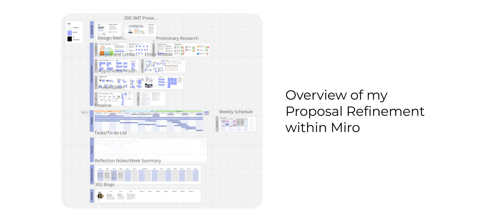
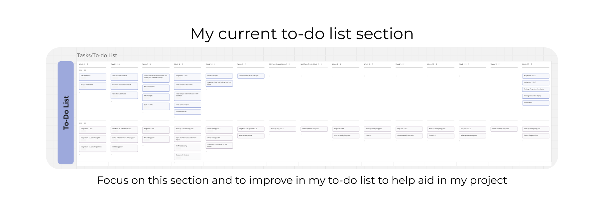

Blog 4 | 301 Assignment 2 Overview/Proposal Refinement
Design 302 | Date: 13/08/24 (Tuesday)
A general overview into the proposal refinement stage I had done for assignment 2 within 301 utilising the Four Fs to help reflect on this assignment overall. This assignment spanned out over the course of the first four weeks of this semester.
Facts
I had gone through each of the required items needed for the assignment, looking into the refinement of my proposal from the previous course 300. I created a timeline of work, followed by sections for weekly tasks and reflection. I created a hypothetical vision, looking into different materials, mood boards and potential ideas for my final output.
I looked into my chosen design methodology, tools, and methods.
I looked into precedent research of projects that are similar to what I would produce. From this, I also looked into my scope and limitations. I went through the ethics module and wrote up a document based on them and how they would affect my own research. From all these aspects, I then changed my HMW statement to refine my project and narrow down my focus on what I am doing.
I had done most of the bulk of these works during the last week when it was due.

Feelings
At the start of this assignment, I felt lost and confused about what was expected of me and this assignment. This feeling was also seen in my own peers. However, after planning out the miro board within the first week, I started to feel more confident. Knowing what was needed and having it laid out made it easier to plan what I needed to do.
However, after a few weeks came the last week in which to work on this assignment. I felt like time had gone by fast, and it was all catching up with me. Somewhat stressed due to more planning, I realised that the amount of work I thought I had to do as what I had planned before was the bare minimum. However, I wanted to flesh out more of my project as I got closer to the deadline.
However, overall, after the end of this assignment, I felt proud and accomplished finishing off these parts on my Miro board and happy with the outcome, as it allowed me insight into what my project would look like.
Findings
I found that despite planning in advance, more issues and items can come up on what is required and what is needed. I make sure to work steadily on my project to ensure my work is produced to the highest standard that I want, not to the bare minimum of what is required of me.
I also found due dates help motivate me well, pushing me to do my work when a listed due date was attached to the work.
Future
From this, I can take away that starting early and planning out my work is helpful and useful. However, can not always be trusted in terms of work to do, and so steadily working on my project over time is the best thing to do to ensure my work is produced to a standard that I want, rather than just meeting the specifications and minimum required work for assignments.
I found that due dates help push me to finish my work, so creating soft deadlines for different sections of my project can help me consistently work on my project and make the process feel easier with less dread and confusion. This is seen to be backed up by the idea of to-do lists helping in productivity, so I’ll be using some tips to help create a better to-do list, breaking them up into smaller pieces and with clear due dates. (Make Better To-Do Lists, n.d.)

Focus on my to-do list to help aid in my planning. Using tips to help create better to-do lists that help aid in my productivity.
References
Greenaway, R. (n.d.).The Active Reviewing Cycle.
https://reviewing.co.uk/learning-cycle/
Make Better To-Do Lists. (n.d.). Academic Success Center.
https://success.oregonstate.edu/learning/better-lists
The four F’s of active reviewing. (2018, November 5). The University of Edinburgh.
https://www.ed.ac.uk/reflection/reflectors-toolkit/reflecting-on-experience/four-f